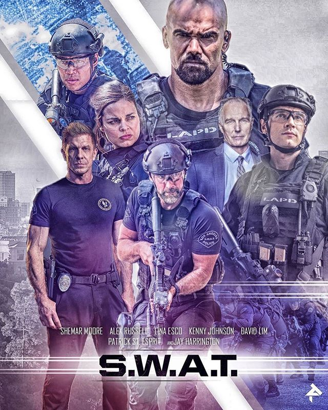

Los Angeles Police Department SWAT officer Jim Street, his partner Brian Gamble, and their team infiltrate a bank taken hostage by robbers (in a scene loosely based on the North Hollywood shootout), where Gamble disobeys orders and engages the robbers, causing a hostage to sustain injuries. He and Street manage to subdue the criminals but are taken off the SWAT team by Captain Fuller, the commanding officer of the LAPD Metropolitan Division. Fuller offers Street a chance to rejoin the team by implicating Gamble, but he refuses and is therefore demoted to working at the police inventory. Gamble, under the assumption that Street ratted on him to stay on SWAT, quits the force and ends their friendship.
